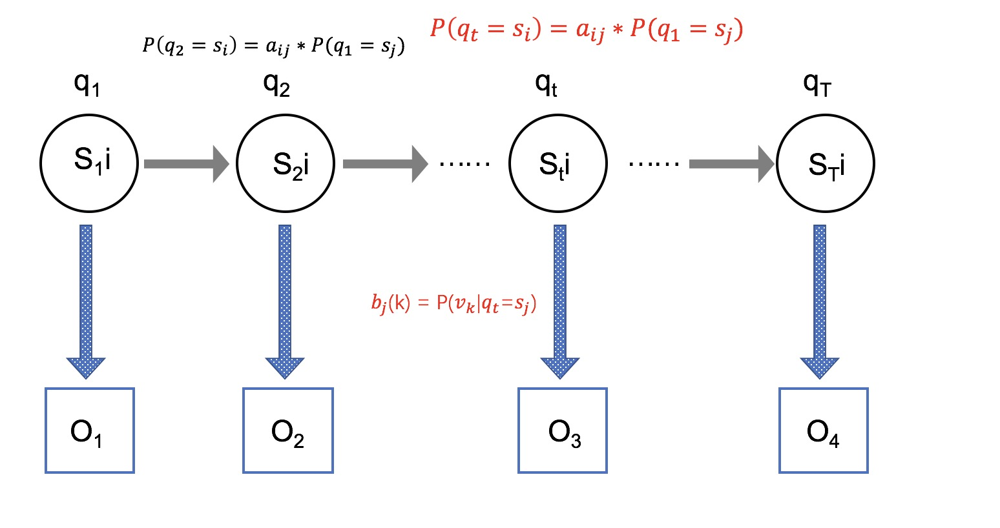
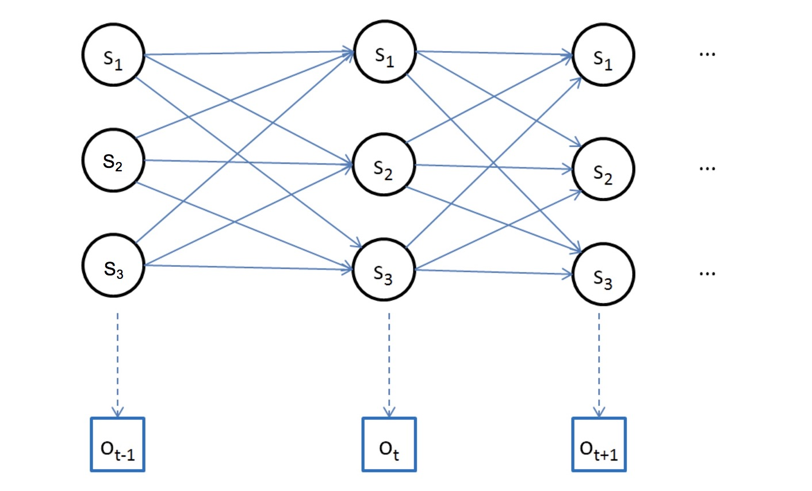

隐马尔科夫模型
隐马尔科夫模型是一种统计模型，他由马尔科夫随机过程生成无法观察的状态随机序列，每个状态又会生成不同的观测值，从而产生随机观测序列。
隐马尔可夫模型
隐马尔科夫模型(HMM)是一种统计模型，他由马尔可夫随机过程生成无法观察的状态随机序列，每个状态又会生成不同的观测值，从而产生随机观测序列。
因为状态序列是隐含的并且符合马尔科夫过程因此称为隐马尔可夫模型。他有三个基本问题，处理好这三个基本问题，基本就能熟练运用隐马尔可夫模型。
概率计算问题: 能够对某个观测序列给出其发生的概率；
学习问题: 通过一个观测序列，调整(学习)参数使得这个观测序列发生概率最大；(最大似然)
编码问题: 通过一个观测序列，给出隐含的概率最大的状态序列
离散马尔可夫过程
首先什么是马尔可夫过程。假设有N个不同的状态 ${S1,S_2,…S_N}$ 的随机过程。$a{ij}$ 代表 $S_i$ 到 $S_j$ 的转移概率。当这个随机过程满足：当前的状态仅与它之前的状态有关时，就是马尔可夫过程。用公式表达即：
于是得到转移概率：
其中转移概率$a{ij}$自然有两个属性：$a{ij}\geq0$和$\sum{j=1}^{N}a_{ij}=1$
以上就是离散马尔科夫随机过程。
隐马尔科夫要素
隐马尔可夫有五个要素组成：
- $N$ ，表示模型中的状态数（隐式状态）。模型中的各个状态是相互连结的，任何状态能从其它状态到达。我们用 $S$ 表示各个状态的集合，$S={s_1,s_2,…,s_N}$， $q_t$ 表示 t 时刻的状态。
- $M$ ，表示模型中每个状态不同的观察集合(可见状态)数量。我们用$V$表示各个观察值(可见状态)集合，$V={v_1,v_2,…,v_M}$
- $A$ ，状态转移概率分布
- $B$ ，观察字符在状态j时的概率分布，$B={b_j(k)}$，其中$b_j(k)=P[v_k|q_t=S_j]$
- $\pi$ ，表示状态分布，$\pi={\pi_j}$，其中$\pi_j=P[q_1=S_j]$
给定$N,M,A,B,\pi$，HMMs能输出一个观察序列$O=O_1O_2…O_T$，其中$O_t\in V$ ，$T$ 是观察序列的数量。

从以上的讨论可知，一个完整的隐马尔可夫模型要求两个具体的模型参数 $N$ 和 $M$，和三个概率矩阵 $A,B,π$，也即隐马尔可夫模型可形式化定义为一个五元组$(N,M,A,B,π)$。
隐马尔可夫的三个基本问题
- 概率计算问题：给定一个模型$\lambda=(N,M,A,B,\pi)$，如何高效地计算某一输出观察序列$O=O_1O_2…O_T$的概率$P(O|\lambda)$
- 编码问题：给定一个模型$\lambda=(N,M,A,B,\pi)$，和一个输出观察序列$O=O_1O_2…O_T$，如果找到产生这一序列概率最大的状态序列$Q=s_is_j…s_T$
- 学习问题：给定一个模型$\lambda=(N,M,A,B,\pi)$，和一个输出观察序列$O=O_1O_2…O_T$，如何调整参数使得产生这一序列概率最大。
为了方便分析问题和给出解决方案，这里先介绍一下隐马尔可夫模型的条件独立性假设。隐马可尔可夫模型是一个生成模型，给定一个观察序列，HMMs 模型隐含一个与观察序列对应的状态序列。隐马可夫模型图示如下，图中清楚的表示出了隐马尔可夫模型内部的条件独立关系，有三个独立性假设：（一）t时刻的状态$q_t=s_i$只依赖于t-1时刻的状态。（二）t时刻所生成的值$b_i(O_t)$只依赖于t时刻的状态。（三）状态与具体时间无关。

了解这三个问题之后就已经知道HMM能够干什么，能够处理什么问题。这就足够了。
以下是解决三个问题的算法
问题1的暴力解法
枚举所有的状态序列I（长度为T）

复杂度为 $O(2T\cdot N^T)$ 基本上无法完成
forward-backward 算法
问题1的解法：
前向算法
假设：$\alpha_t(i)=P(o_1o_2…o_t,q_t=s_i|\lambda)$
那么就会有：
初值：$\alpha1(i)=\pi_ib{io_1}$
递推：对于t=1,2…T-1

最终：$P(O|\lambda)=\sum_{i=1}^N\alpha_T(i)$
后向算法
假设：$\betat(i)=P(o{t+1}o_{t+2}…o_T|q_t=s_i,\lambda)$
初值：$\beta_T(i)=1$
那么递推就会有：

最终：$P(O|\lambda)=\sum{i=1}^N\pi_ib{iO1}\beta_1(i)$
至此前向后向算法就描述完了，其实我个人比较难理解后向算法。
Viterbi 算法
问题2的解法：问题 2 是一个解码问题，即从 $N^T$ 个可能的状态序列中找到一个”最优”的状态序列。
Viterbi 算法：给定观察序列 $Ο=Ο_1Ο_2..Ο_T$，利用 Viterbi 动态规划算法可以有效率的找到一个最优的状态序列 $Q=q_1q_2…q_T$，计算量为 $NT^2$，如下图大致也能明白利用动态规划来找到一个最优的序列。

假设：$\delta_t(i)=max(P(o_1o_2…o_t,q_t=s_i|\lambda))$
初值 : $\delta_1(i)=\pi_ib_i(o_1)$
递推：
Baum-welch算法
问题3的解法：使用Baum-welch算法进行最大似然估计。
这部分稍微有点复杂自身还未明白。就不在这里贴了，大家感兴趣可以在下文参考资料里找到想要的。
参考资料
https://www.cnblogs.com/shixiangwan/p/8979106.html
https://www.cnblogs.com/skyme/p/4651331.html